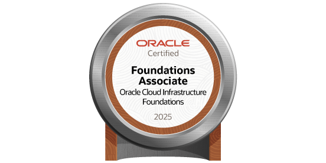
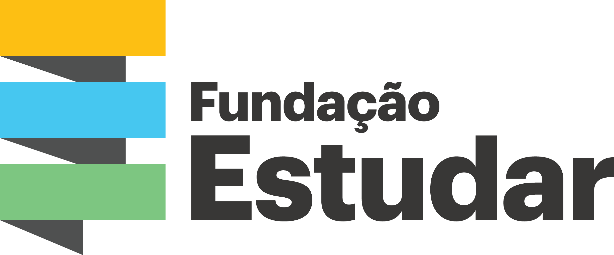
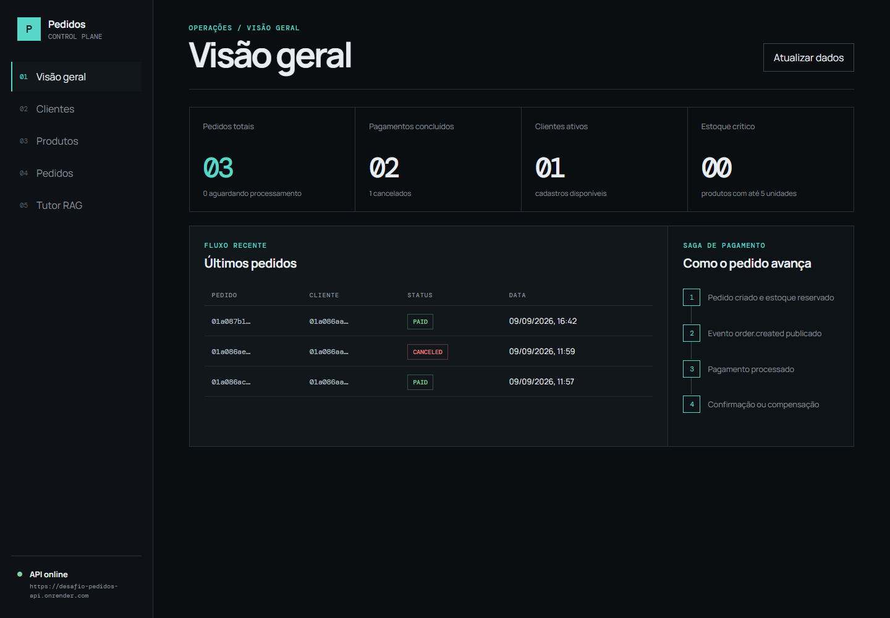
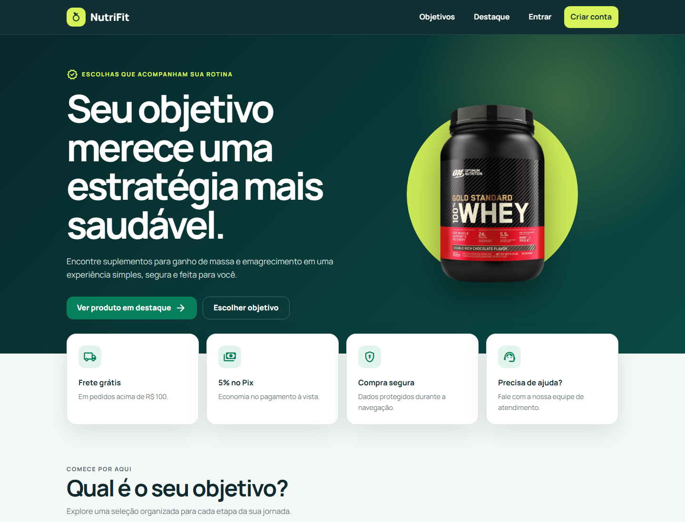
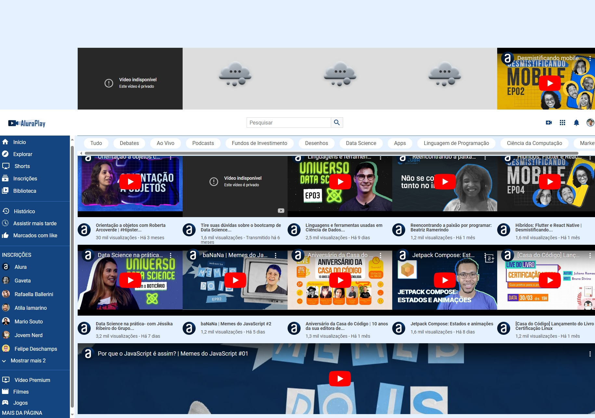
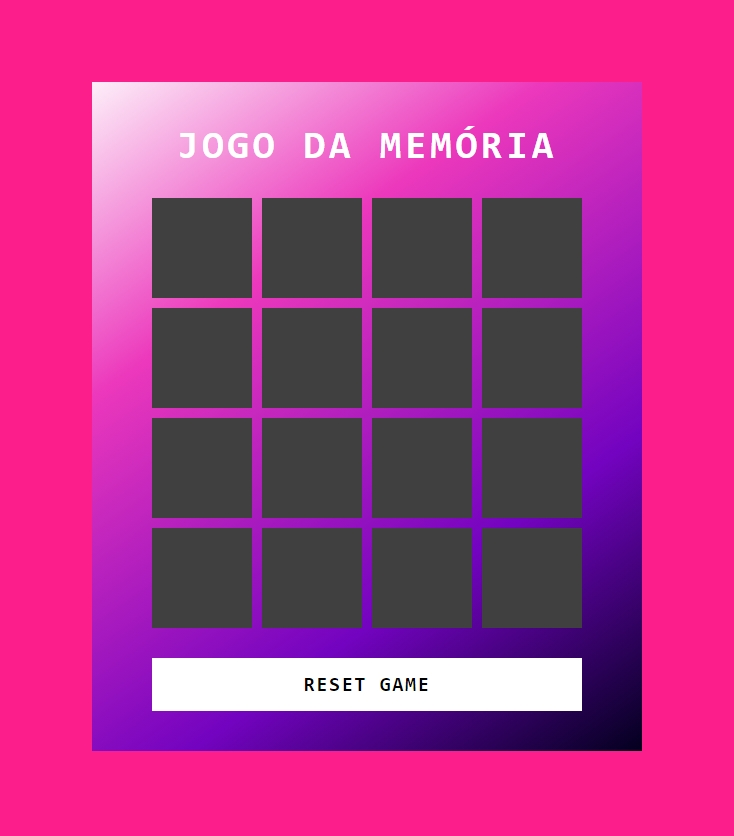

Backend
Go · Java · Node.js · Express · Spring Boot
APIs REST, regras de negócio e arquitetura em camadas
Código, lógica e experiências.
Desenvolvedor Back-end Júnior.
Go, Java e Node.js para transformar regras de negócio em APIs.
Estudante de Ciência da Computação, com prática em aplicações full stack, cloud e IA. Busco minha primeira oportunidade como estagiário ou desenvolvedor back-end júnior.
APIs REST PostgreSQL Docker
Marcelo Rodrigues Back-end Júnior · Ciência da Computação
Escolha qualquer fase, em qualquer ordem. Todo o conteúdo está disponível desde o início.
0 de 4 fases visitadas nesta sessão.
As fases representam seções do site. O progresso de exploração não representa certificações ou conquistas profissionais.
Sou Marcelo Rodrigues, estudante de Ciência da Computação na Anhanguera, com conclusão prevista para outubro de 2027. Busco minha primeira oportunidade em desenvolvimento, com foco em back-end.
Tenho prática em projetos com Go, Java, JavaScript, Python e SQL. Desenvolvo APIs REST e integrações com PostgreSQL e MySQL, usando Git/GitHub, Docker, testes automatizados e GitHub Actions. No sistema de pedidos em Go, exploro DDD, Clean Architecture, RabbitMQ, Saga e observabilidade.
Minha trajetória anterior em operações e atendimento fortaleceu organização, comunicação e resolução de problemas. Quero colaborar com uma equipe e evoluir entregando software bem estruturado.
Tecnologias praticadas em projetos e formações. A stack reúne o perfil profissional e os repositórios, sem níveis de proficiência inventados.
Go · Java · Node.js · Express · Spring Boot
APIs REST, regras de negócio e arquitetura em camadas
React · TypeScript · JavaScript · HTML · CSS · Vite
Interfaces e integração com APIs
PostgreSQL · MySQL · TiDB Cloud · SQL
Persistência relacional e consultas parametrizadas
Oracle Cloud Infrastructure (OCI) · AWS · Google Cloud · Docker · Linux · GitHub Actions
Containers, serviços de nuvem e CI/CD
Python · CrewAI · Gemini · LangGraph · RAG
Agentes e recuperação de evidências documentais
OAuth 2.0 · OpenID Connect · JWT · Testes · Prometheus
Autenticação, testes e observabilidade
Fontes: LinkedIn e perfil no GitHub.
Um pouco da minha história, das minhas pausas e do que gosto de compartilhar. Abra os cards para conhecer mais.
Gosto de manter a forma e caminhar. Aproveito esses momentos para cuidar de mim e passar tempo com minha esposa.
A percussão faz parte da minha história desde a infância, entre o pagode e a bateria. Tocar é uma das minhas formas de desestressar.
O rádio acompanha minha rotina de trabalho: gosto de ouvir notícias e música. Música popular, pop rock e gospel estão entre minhas preferências para acalmar a mente.
Gosto de assistir com minha esposa: filmes de ação, aventura e ficção, séries de comédia, donghuas e doramas.
Aprendi a cozinhar para dividir as tarefas com minha esposa. Entre os pratos que gosto de preparar estão macarrão, carreteiro gaúcho e um bom churrasco.
Formações, certificados e selos com acesso às fontes de origem.
Em andamento. Formação acadêmica e prática em desenvolvimento de software.
Consultar fonte no LinkedInAlgoritmos, técnicas de programação, orientação a objetos e programação web.
Consultar fonte no LinkedInAPIs REST, PostgreSQL, Docker, testes e arquitetura em camadas. Link do certificado informado no LinkedIn.
Consultar certificadoFormação em fundamentos de segurança, Linux, Python e SQL. Selos de emissão listados abaixo.
Consultar certificadoConclusão informada no perfil; período não publicado.
Consultar fonte no LinkedInCredencial informada no LinkedIn. Emissor e data preservados conforme o perfil.
Consultar credencialNomes, emissores e datas consultados no Credly e no Oracle CertView em 02/10/2026. As duas emissões de Cibersegurança são exibidas como registros distintos, sem tratá-las como duas formações.

Oracle · Emitido em 14/07/2025
Válido até 14/07/2027
Ver credencial ↗Coursera · Emitido em 08/04/2026
Ver credencial ↗Coursera · Emitido em 07/12/2025
Ver credencial ↗Google Cloud · Emitido em 30/10/2025
Ver credencial ↗Google Cloud · Emitido em 30/10/2025
Ver credencial ↗Google Cloud · Emitido em 26/10/2025
Ver credencial ↗Google Cloud · Emitido em 25/10/2025
Ver credencial ↗Google Cloud · Emitido em 24/10/2025
Ver credencial ↗Coursera · Emitido em 25/01/2024
Ver credencial ↗Alura e DIO possuem certificados públicos consultados. Os três cursos Proz têm evidência documental enviada pelo titular; validação online independente pendente. CC50 ainda aguarda documento acessível.
Documento enviado pelo titular: lógica, HTML/CSS, JavaScript, bancos de dados e projetos práticos. Data de emissão não indicada no documento.
Período e carga horária conferidos no certificado enviado pelo titular. Link Joyclass informado; validação online independente pendente.

Estudo introdutório informado pelo titular. Comprovação e data pendentes; não apresentado como certificação emitida por Harvard.
Dados conferidos no certificado enviado pelo titular; validação online pendente.
Seleção de aplicações e estudos com código, documentação e decisões técnicas. Descrições baseadas nos READMEs dos repositórios e no LinkedIn.
Consulta opcional. As descrições e demos abaixo permanecem disponíveis sem conexão.

Pedidos, reserva de estoque e pagamentos fictícios com processamento assíncrono. Inclui painel web e tutor documental.
A demo usa hospedagem gratuita; os serviços podem levar cerca de um minuto para iniciar.

E-commerce demonstrativo com catálogo, cadastro, login e checkout simulado. Evolução de um projeto integrador em equipe.
Produtos e pagamentos são demonstrativos. A API gratuita pode demorar na primeira chamada.
Catálogo de filmes com autenticação JWT, avaliações e recomendações, desenvolvido no curso de Aprofundamento Cloud Proz + AWS.
Link de demo informado no README; disponibilidade atual ainda não confirmada.
API REST para criar, consultar, atualizar e remover usuários, com exemplos de execução e testes manuais no Postman.
Execução local documentada no repositório; nenhuma demo pública foi confirmada.
Plataforma de cuidados com pets da Equipe 2 – Brasil. Minha participação é descrita como integração e apoio full stack.
MVP educacional. A documentação consultada contém funcionalidades ainda planejadas.
Calculadora com interface gráfica e registro persistente das operações, acompanhada de guia de compilação.
Demonstração e instruções disponíveis no README; não exige uma demo web.
Explorar todos os repositórios no GitHub
Projetos de estudo com descrições revisadas a partir dos READMEs e do código. A consulta das demos verifica disponibilidade, sem garantir funcionamento completo.
Jogo de adivinhação entre 1 e 10, com contagem de tentativas e síntese de voz via ResponsiveVoice, criada no módulo de Lógica de Programação da Alura/Oracle ONE.

Interface de estudo com vídeos incorporados do YouTube. Usa Flexbox no layout, media queries para adaptar o menu e CSS Grid nas descrições dos vídeos.

Desafio de estudo da DIO com JavaScript puro: cria cartas no DOM, compara pares, conta tentativas e calcula pontuação pelo tempo, com sons e transições 3D em CSS.
Escolha o canal que funciona melhor para você. Vamos falar sobre tecnologia, projetos e próximos passos.
Uma boa conversa pode ser o início de um projeto.
Oportunidades profissionais, colaboração e troca de ideias sobre tecnologia.
Prefere escrever por aqui? Use o formulário ao lado.